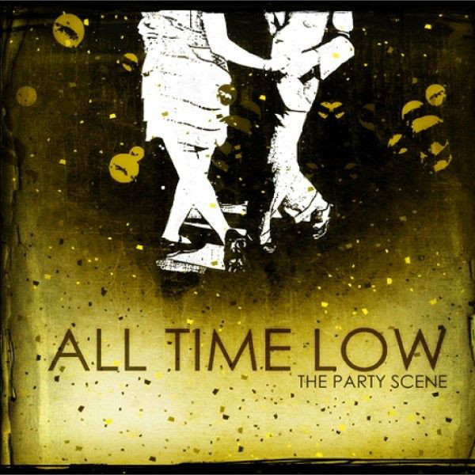

All Time Low has released 6 studio albums so far. The band will soon release a 7th one this year. Learn more about each of them below.
The Party Scene So Wrong, It's Right Nothing Personal Dirty Work Don't Panic Future Hearts Last Young RenegadeTheir first album was partly recorded in Valencia Studios in Brookeville, Marylan and partly recorded in Paul Leavitt's basement in Silver Spring, Maryland. Only two singles were released, titled "Circles" and "The Girl's a Straight–Up Hustler".
Released: July 19, 2005.
Recorded: 2004
Genre: Pop punk
Length: 39:43 min
Label: Emerald Moon
Producer: Paul Leavitt
Their second album was quite a success, in its first week the album sold 14,200 copies. By July 12, 2008, it sold around 105,000 copies in the U.S. One of the album’s songs Dear Maria, Count Me In was certified Platinum by the Recording Industry Association of America. The album placed number 10 on Rock Sound's "The 51 Most Essential Pop Punk Albums of All Time" list.
Released: September 25, 2007
Recorded: 2007
Genre: Pop punk
Length: 40:12 min
Label: Hopeless
Producer: Matt Squire and Paul Leavitt
Nothing Personal debuted at number four in the charts and sold 63,000 copies, becoming the band's best sales week and highest charting album. It became one of the best selling rock albums of the year, and introduced a new audience to the band. The title for Nothing Personal comes from a lyric in the second song on the album "Break Your Little Heart".
Released: July 7, 2009
Recorded: January–February 2009
Genre: Emo pop, pop punk
Length: 41:00 min
Label: Hopeless
Producer: Matt Squire, Butch Walker, David Bendeth, S*A*M & Sluggo, and The–Dream
The album is the band's major label debut had much commercial success, debuting at No. 6 on the Billboard 200 in the United States, selling 45,000 in the first week sales, by October 2012 it sold around 107,000 copies in the US. It also charted in the top 20 in Australia, the United Kingdom and Canada. The band wanted to focus this album more on developing the band’s sound and producing great songwriting rather than conform to the boundaries of one certain genre.
Released: June 6, 2011
Recorded: March–July 2010
Genre: Pop rock, power pop, pop punk, emo pop
Length: 40:32 min
Label: Interscope, DGC
Producer: Matt Squire, Butch Walker, John Feldmann, John Fields, Mike Green, and The–Dream
All Time Low has continued touring year–long in support of Don't Panic The album focuses further on evolving the band’s sound while taking influence from each of their previous releases. Many of the songs from his album have gained much fame. One of the songs, Outlines, was co–written by Patrick Stump from Fall Out Boy. Other songs, Somewhere In Neverland and Backseat Serenade both had their music videos premiered on MTV in the spring of 2013.
Released: October 8, 2012
Recorded: 2011–12
Genre: Pop punk, emo pop
Length: 40:57 min, 69:13 min (reissue)
Label: Hopeless
Producer: Mike Green and Alex Gaskarth
Their sixth album from is the last All Time Low album to be released on Hopeless Records. The album following would be later signed with the Record Label Fueled by Ramen. Future Hearts became the band's highest charting and biggest selling ever! It debuted on the Billboard 200 at No. 2, selling around 75,000 copies in its first week. It also placed at No. 1 in the UK and in the top 10 in Australia and New Zealand album charts. Generally, it received positive reviews from critics. The album was praised the new musical direction but criticised for the lack of cohesiveness.
Released: April 3, 2015
Recorded: September 2014–15
Genre: Pop punk, pop rock, power pop
Length: 45:41
Label: Hopeless
Producer: John Feldmann, Mike Green, Alex Gaskarth, Rian Dawson, Zakk Cervini, Matt Pauling
Last Young Renegade is the upcoming seventh studio album yet to be released this June. It is their first album with Fueled by Ramen.
Released: June 2, 2017
Recorded: 2016 – 2017
Label: Fueled by Ramen
Producer: All Time Low, Blake Harnage, Colin Brittain, RAS